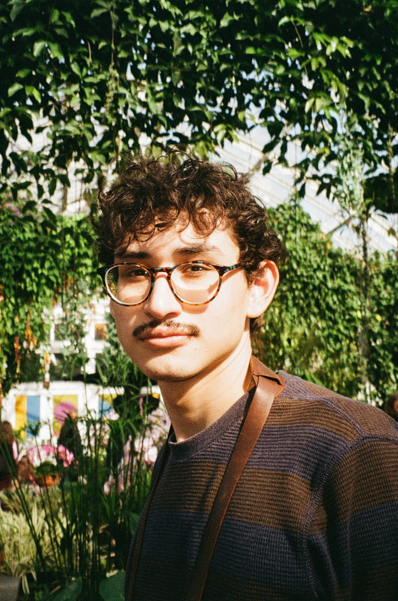

Based in New York City
About Me
I am a designer and photographer who graduated from New York University’s Gallatin School of Individualized Study. My concentration, "Opening Up Perspectives in Visual Design Practices," explores the impact of human variety in design. I focus on understanding audiences and users through comprehensive research methods to avoid mismatches and create effective solutions.
What I Do
- Design Research
- Visual Identity
- Brand Guidelines
- Art Direction
- Print Design
My Approach
A designer must be able to hold empathy. I aim to understand the varying needs of different audiences and create inclusive and impactive designs. By avoiding assumptions and relying on research, I ensure that a project fits the varied experiences of users. Inspired by the principles of design thinking, I challenge prevailing biases and create solutions that are both intentional and socially responsible.
Contact at design@mateovr.com